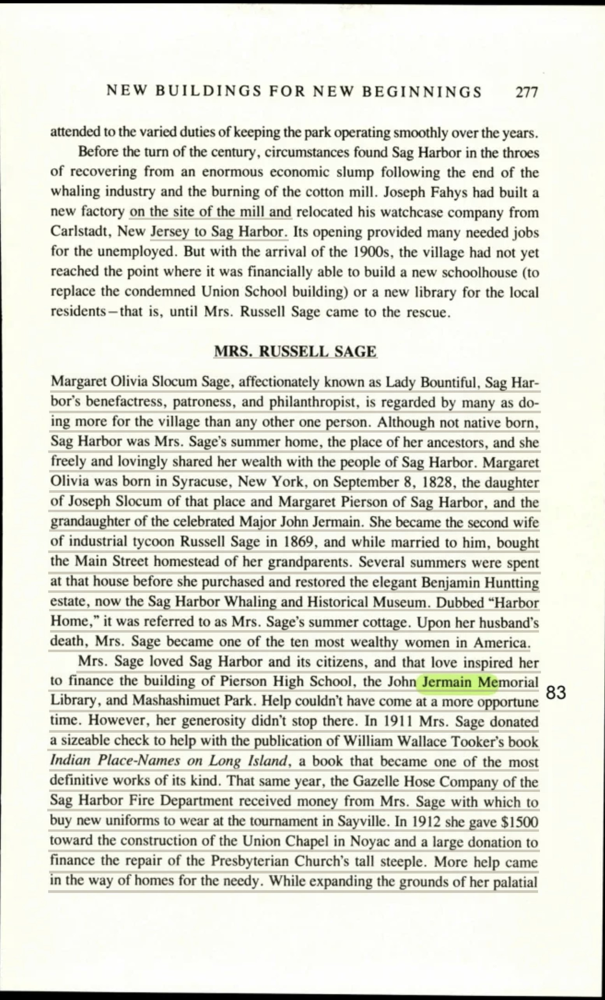
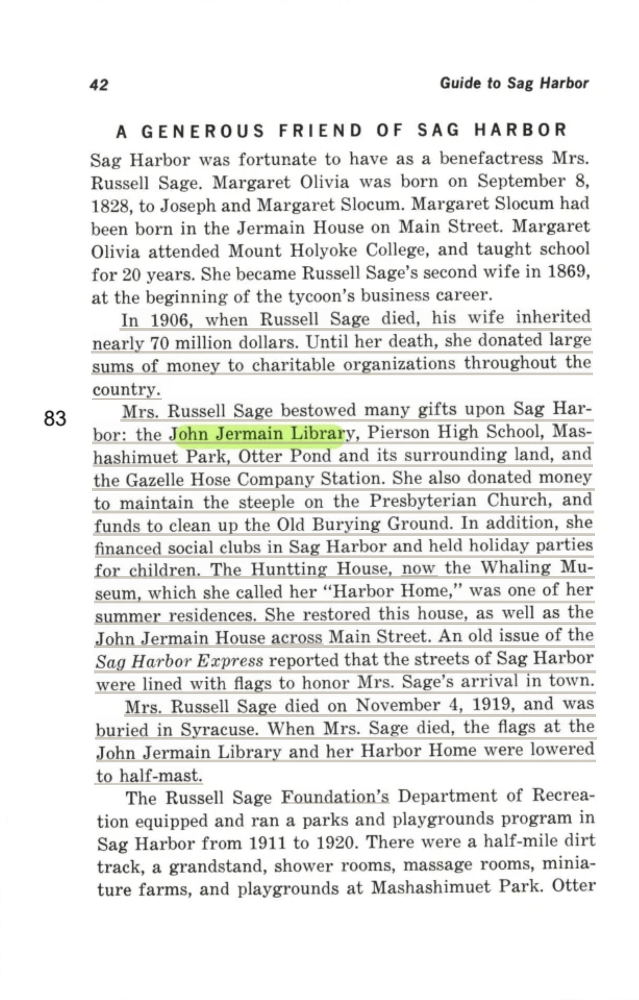
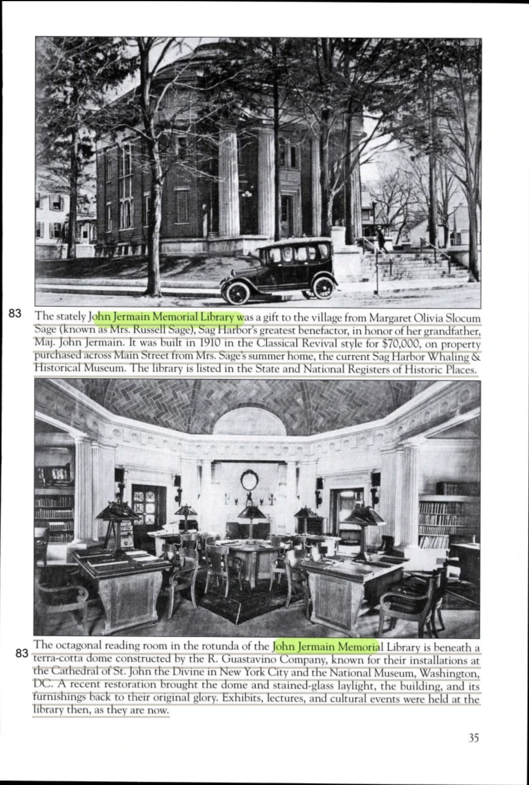
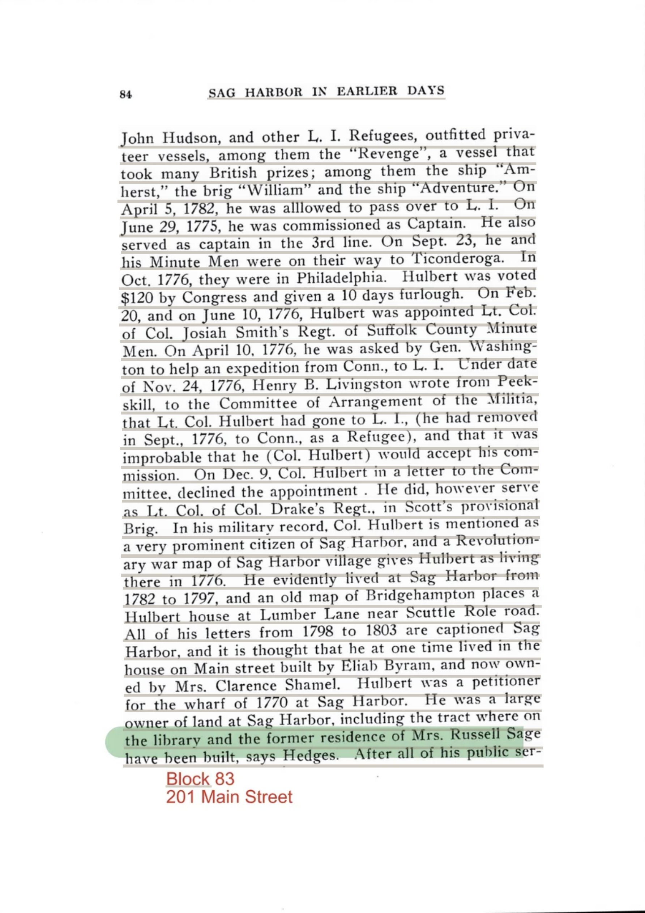
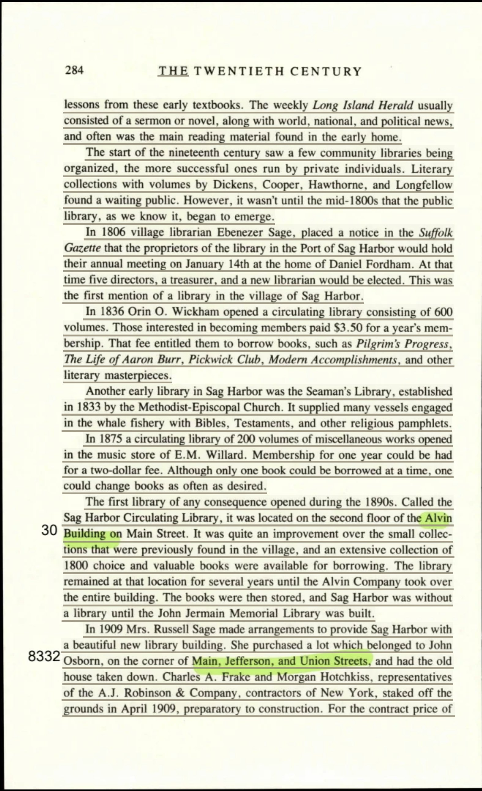
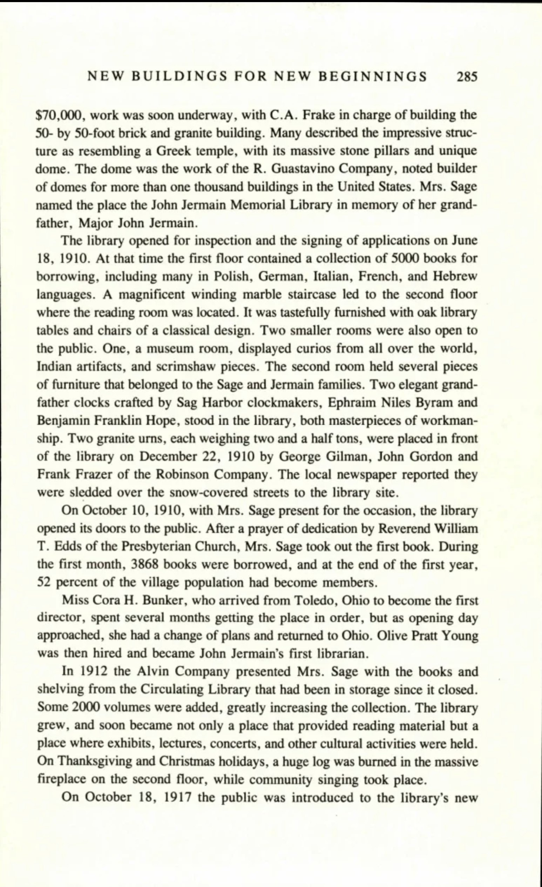
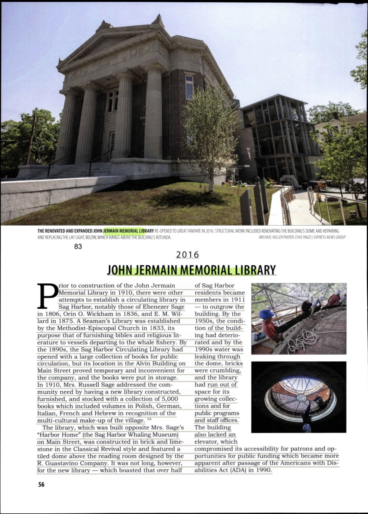
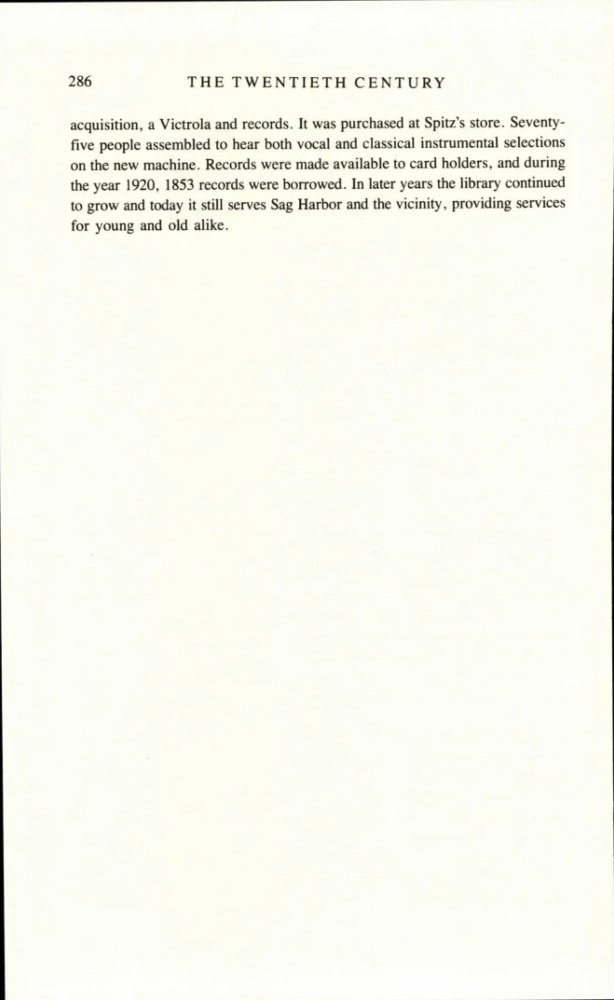
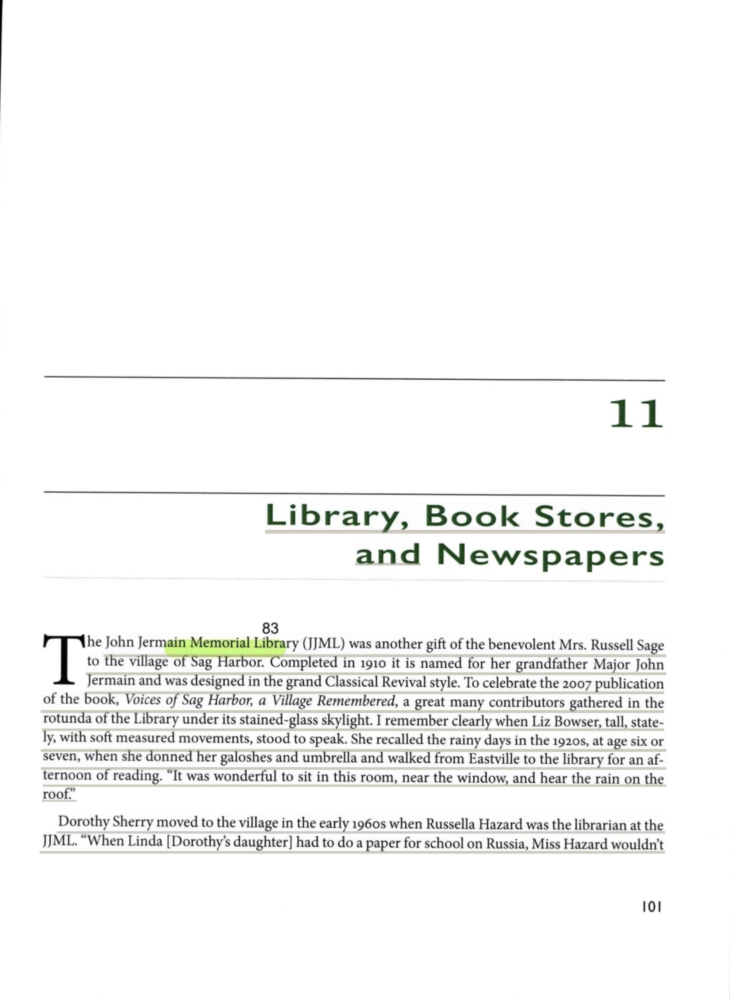
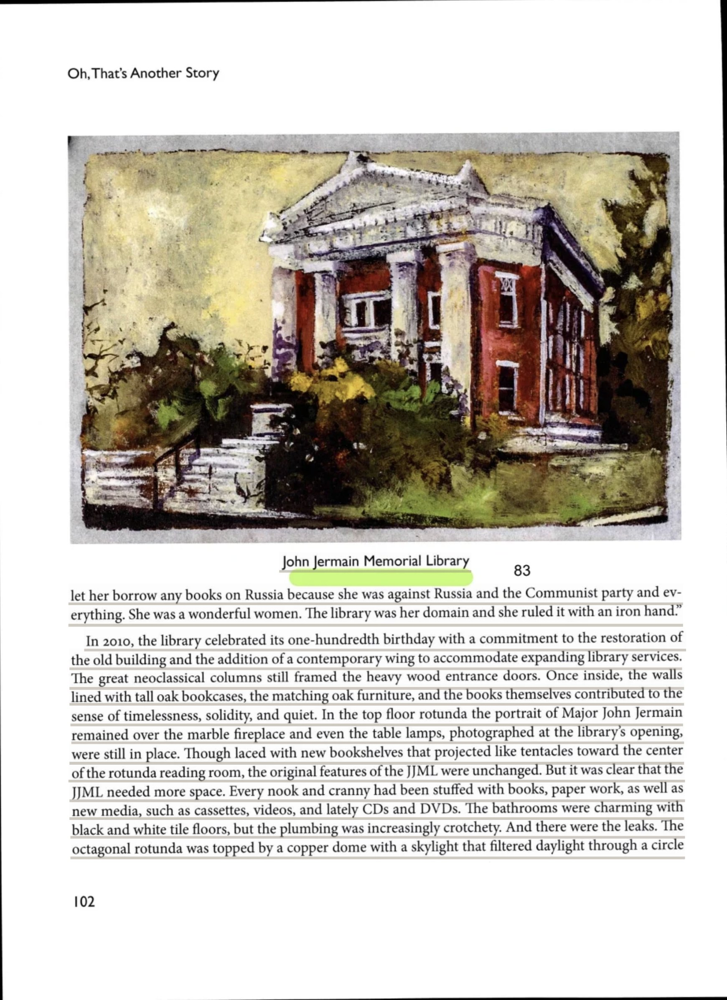

Mrs. Russell Sage's Greek temple by the sea, 1910 to the book brigade of 2016
Every previously italicized phrase is highlighted and colour-coded by source. Where the source page is on file, clicking the highlight opens the scan.
The story of the John Jermain Memorial Library is inseparable from the story of its benefactress, a woman whose munificence shaped the civic fabric of an entire village. Margaret Olivia Slocum Sage—affectionately known as Lady Bountiful, Sag Harbor's benefactress, patroness, and philanthropist, is regarded by many as doing more for the village than any other one person—was not born of the place she would so richly endow, yet her ancestral ties ran deep. She was born in Syracuse, New York, on September 8, 1828, the daughter of Joseph Slocum of that place and Margaret Pierson of Sag Harbor, and crucially, she was the grandaughter of the celebrated Major John Jermain, whose name the library would forever bear.
Her ascent into the highest echelons of American wealth came through marriage; she became the second wife of industrial tycoon Russell Sage in 1869. The pivotal transformation of her fortunes arrived with widowhood, for in 1906, when Russell Sage died, his wife inherited nearly 70 million dollars. With this inheritance, she became one of the ten most wealthy women in America, and thereafter she donated large sums of money to charitable organizations throughout the country. It was this spirit that she brought to bear upon the village of her forebears, and among the gifts that Mrs. Russell Sage bestowed many gifts upon Sag Harbor: the John Jermain Library, Pierson High School, Mashashimuet Park, Otter Pond and its surrounding land, and the Gazelle Hose Company Station, none would prove so enduring a cultural landmark as the library.
The institution was, in every sense, a tribute of descendant to ancestor. The stately John Jermain Memorial Library was a gift to the village from Margaret Olivia Slocum Sage (known as Mrs. Russell Sage), Sag Harbor's greatest benefactor, in honor of her grandfather, Maj. John Jermain. The very land upon which it would rise bore the imprint of the family's historical presence, for according to the chronicler Hedges, John Jermain had been a large owner of land at Sag Harbor, including the tract where on the library and the former residence of Mrs. Russell Sage have been built, says Hedges.
Before Mrs. Sage's grand edifice crowned the corner of Main Street, the village had known only humbler experiments in communal reading. Books were scarce in early colonial days, and it wasn't until after the American Revolution that the idea of a circulating library was instituted. The earliest stirrings were tentative: in 1806 village librarian Ebenezer Sage, placed a notice in the Suffolk Gazette that the proprietors of the library in the Port of Sag Harbor would hold their annual meeting on January 14th at the home of Daniel Fordham—an occasion that constituted the first mention of a library in the village of Sag Harbor.
Successive ventures followed in modest procession. In 1836 Orin O. Wickham opened a circulating library consisting of 600 volumes. A distinctly maritime institution also arose, for another early library in Sag Harbor was the Seaman's Library, established in 1833 by the Methodist-Episcopal Church, and it supplied many vessels engaged in the whale fishery with Bibles, Testaments, and other religious pamphlets. Later still, in 1875 a circulating library of 200 volumes of miscellaneous works opened in the music store of E.M. Willard.
The most ambitious precursor was that which opened during the 1890s. Called the Sag Harbor Circulating Library, it was located on the second floor of the Alvin Building on Main Street. Yet its fortunes proved precarious: the library remained at that location for several years until the Alvin Company took over the entire building. Thereafter, the books were then stored, and Sag Harbor was without a library until the John Jermain Memorial Library was built—a hiatus that lent Mrs. Sage's intervention the character of rescue as much as benefaction.
The mechanics of creation were set in motion with characteristic decisiveness. In 1909 Mrs. Russell Sage made arrangements to provide Sag Harbor with a beautiful new library building. The acquisition of the site required an act of demolition, for she purchased a lot which belonged to John Osborn, on the corner of Main, Jefferson, and Union Streets, and had the old house taken down. The preparatory survey was undertaken when Charles A. Frake and Morgan Hotchkiss, representatives of the A.J. Robinson & Company, contractors of New York, staked off the grounds in April 1909, preparatory to construction.
The structure that rose was of considerable substance and refinement. For the contract price of $70,000, work was soon underway, with C.A. Frake in charge of building the 50- by 50-foot brick and granite building. To contemporaries the building evoked the antique world, for many described the impressive structure as resembling a Greek temple, with its massive stone pillars and unique dome. Its most celebrated architectural feature was the handiwork of a master firm: the dome was the work of the R. Guastavino Company, noted builder of domes for more than one thousand buildings in the United States. The same company lent the structure a lineage of the highest order, for the octagonal reading room in the rotunda of the John Jermain Memorial Library is beneath a terra-cotta dome constructed by the R. Guastavino Company, known for their installations at the Cathedral of St. John the Divine in New York City and the National Museum, Washington, DC.
Even the ornamental furnishings arrived with ceremony. Two granite urns, each weighing two and a half tons, were placed in front of the library on December 22, 1910 by George Gilman, John Gordon and Frank Frazer of the Robinson Company, and the local newspaper reported they were sledded over the snow-covered streets to the library site.
The institution unveiled itself to the public in measured stages. The library opened for inspection and the signing of applications on June 18, 1910. The holdings reflected a cosmopolitan sensibility unusual for so provincial a setting: at that time the first floor contained a collection of 5000 books for borrowing, including many in Polish, German, Italian, French, and Hebrew languages, a provision made in recognition of the multi-cultural make-up of the village.
The interior rewarded the visitor who ascended its heights, for a magnificent winding marble staircase led to the second floor where the reading room was located, and it was tastefully furnished with oak library tables and chairs of a classical design. The building also served as a repository of curiosities and heritage; one, a museum room, displayed curios from all over the world, Indian artifacts, and scrimshaw pieces, while the second room held several pieces of furniture that belonged to the Sage and Jermain families. Among the treasures stood horological masterworks: two elegant grandfather clocks crafted by Sag Harbor clockmakers, Ephraim Niles Byram and Benjamin Franklin Hope, stood in the library, both masterpieces of workmanship.
The formal consecration arrived in autumn. On October 10, 1910, with Mrs. Sage present for the occasion, the library opened its doors to the public. In a gesture rich with symbolism, after a prayer of dedication by Reverend William T. Edds of the Presbyterian Church, Mrs. Sage took out the first book. The community's embrace was immediate and fervent: during the first month, 3868 books were borrowed, and at the end of the first year, 52 percent of the village population had become members.
Leadership passed through an early disruption. Miss Cora H. Bunker, who arrived from Toledo, Ohio to become the first director, spent several months getting the place in order, but as opening day approached, she had a change of plans and returned to Ohio. In her stead, Olive Pratt Young was then hired and became John Jermain's first librarian. The collection swelled when in 1912 the Alvin Company presented Mrs. Sage with the books and shelving from the Circulating Library that had been in storage since it closed, whereby some 2000 volumes were added, greatly increasing the collection.
In time the library transcended its original function, so that it soon became not only a place that provided reading material but a place where exhibits, lectures, concerts, and other cultural activities were held. Seasonal rituals gave the space warmth both literal and communal: on Thanksgiving and Christmas holidays, a huge log was burned in the massive fireplace on the second floor, while community singing took place. Technological novelty arrived as well, for on October 18, 1917 the public was introduced to the library's new acquisition, a Victrola and records, an event at which seventy-five people assembled to hear both vocal and classical instrumental selections on the new machine.
The bond between patroness and village persisted to the very end of her long life; she remained active into her 90th year, widely known and loved. When news of her passing reached the community she had so transformed, the library she had built became a site of public grief: when Mrs. Sage died, the flags at the John Jermain Library and her Harbor Home were lowered to half-mast.
Across the decades the building retained its singular atmosphere of permanence. One patron, recalling childhood visits, evoked the sensory intimacy of the place—she recalled the rainy days in the 1920s, at age six or seven, when she donned her galoshes and umbrella and walked from Eastville to the library for an afternoon of reading—and remembered that it was wonderful to sit in this room, near the window, and hear the rain on the roof. The institution could also harbor the strong personalities of its stewards; in the early 1960s, when Russella Hazard was the librarian at the JJML, she presided with formidable conviction, for the library was her domain and she ruled it with an iron hand.
Even into the twenty-first century, the fabric of the original design endured. The great neoclassical columns still framed the heavy wood entrance doors, and once inside, the walls lined with tall oak bookcases, the matching oak furniture, and the books themselves contributed to the sense of timelessness, solidity, and quiet. Beneath the crowning glory of the roof, in the top floor rotunda the portrait of Major John Jermain remained over the marble fireplace and even the table lamps, photographed at the library's opening, were still in place.
Yet the very age that lent the building its dignity also exacted its toll. The octagonal rotunda was topped by a copper dome with a skylight that filtered daylight through a circle of stained glass in the center of the space—a feature that was an astonishingly elegant detail to be found in this factory village—but which deteriorated to such a degree that in time blankets had to be provided to keep the rain off patrons sitting beneath it. The decline was comprehensive: by the 1950s, the condition of the building had deteriorated and by the 1990s water was leaking through the dome, bricks were crumbling, and the library had run out of space for its growing collections and for public programs and staff offices. Compounding these deficiencies, the building also lacked an elevator, which compromised its accessibility for patrons and opportunities for public funding which became more apparent after passage of the Americans with Disabilities Act (ADA) in 1990.
The response was a protracted exercise in democratic deliberation. Meetings, public input, exploring alternatives, and long discussions in many committees resulted finally in community consensus and a plan for the next 100 years, a process of which one observer wryly noted: what I can say in one sentence took at least eight years. The financial commitment was substantial; in 2009, Sag Harbor residents approved a referendum of nearly $10 million to restore and expand the library, and ultimately the total cost of renovations climbed to $16 million before construction was completed. The design was entrusted to distinguished hands, as Newman Architects based in New Haven, Connecticut, were chosen from a field of highly qualified firms to lead the design and engineering team. The guiding ambition was one of reverent preservation, demanding the preservation of the 35-foot-tall copper dome and terracotta-tiled rotunda, originally designed by Guastavino Fireproof Construction Co., alongside the salvage of original terrazzo floors and Stuc Pierre plaster work ... and original locally fired red bricks were repainted or reused.
The culmination came with a ceremony of singular communal poetry. Restoration and construction work were completed in 2016 and library staff celebrated their return to the restored 1910 John Jermain Memorial Library with a "book brigade" with hundreds of residents and students from the Sag Harbor Schools lining the streets from its temporary location on West Water Street. In a gesture that united the village's literary past with its restored future, they passed a copy of former History Room librarian Dorothy Ingersoll Zaykowski's Sag Harbor: An American Beauty, person-by-person, to the newly renovated building, where the author who had researched and written this seminal history of the village in 1991 was there to receive it. Thus the library stood renewed, an institution destined, in one admirer's hopeful phrase, to continue to change, providing modern services to the village without losing the elegance of a bygone era and the irreplaceable patina that time has bestowed.
Every highlighted quote, in order of appearance, correlated to its underlying source. The swatch matches the highlight colour in the text.
| # | Verbatim Quote (abbreviated) | Source (Author, Title, Year, Page) |
|---|---|---|
| 1 | “affectionately known as Lady Bountiful, Sag Harbor's benefactress, patroness, and philanthropist, is regarded by many as doing more for the village than any …” | Zaykowski, Sag Harbor: The Story of an American Beauty, 1991, p. 277 [page scan] |
| 2 | “was born in Syracuse, New York, on September 8, 1828, the daughter of Joseph Slocum of that place and Margaret Pierson of Sag Harbor” | Zaykowski, Sag Harbor: The Story of an American Beauty, 1991, p. 277 [page scan] |
| 3 | “the grandaughter of the celebrated Major John Jermain” | Zaykowski, Sag Harbor: The Story of an American Beauty, 1991, p. 277 [page scan] |
| 4 | “became the second wife of industrial tycoon Russell Sage in 1869” | Zaykowski, Sag Harbor: The Story of an American Beauty, 1991, p. 277 [page scan] |
| 5 | “in 1906, when Russell Sage died, his wife inherited nearly 70 million dollars” | Weisburg & Donneson, Guide to Sag Harbor, 1975, p. 42 [page scan] |
| 6 | “became one of the ten most wealthy women in America” | Zaykowski, Sag Harbor: The Story of an American Beauty, 1991, p. 277 [page scan] |
| 7 | “donated large sums of money to charitable organizations throughout the country” | Weisburg & Donneson, Guide to Sag Harbor, 1975, p. 42 [page scan] |
| 8 | “Mrs. Russell Sage bestowed many gifts upon Sag Harbor: the John Jermain Library, Pierson High School, Mashashimuet Park, Otter Pond and its surrounding land,…” | Weisburg & Donneson, Guide to Sag Harbor, 1975, p. 42 [page scan] |
| 9 | “The stately John Jermain Memorial Library was a gift to the village from Margaret Olivia Slocum Sage (known as Mrs. Russell Sage), Sag Harbor's greatest bene…” | Roth, Images of America Sag Harbor, 2018, p. 35 [page scan] |
| 10 | “a large owner of land at Sag Harbor, including the tract where on the library and the former residence of Mrs. Russell Sage have been built, says Hedges” | Sleight, Sag Harbor in Earlier Days, 1997, p. 84 [page scan] |
| # | Verbatim Quote (abbreviated) | Source (Author, Title, Year, Page) |
|---|---|---|
| 11 | “Books were scarce in early colonial days, and it wasn't until after the American Revolution that the idea of a circulating library was instituted.” | Zaykowski, Sag Harbor: The Story of an American Beauty, 1991, p. 283 |
| 12 | “in 1806 village librarian Ebenezer Sage, placed a notice in the Suffolk Gazette that the proprietors of the library in the Port of Sag Harbor would hold thei…” | Zaykowski, Sag Harbor: The Story of an American Beauty, 1991, p. 284 [page scan] |
| 13 | “the first mention of a library in the village of Sag Harbor” | Zaykowski, Sag Harbor: The Story of an American Beauty, 1991, p. 284 [page scan] |
| 14 | “In 1836 Orin O. Wickham opened a circulating library consisting of 600 volumes.” | Zaykowski, Sag Harbor: The Story of an American Beauty, 1991, p. 284 [page scan] |
| 15 | “another early library in Sag Harbor was the Seaman's Library, established in 1833 by the Methodist-Episcopal Church” | Zaykowski, Sag Harbor: The Story of an American Beauty, 1991, p. 284 [page scan] |
| 16 | “it supplied many vessels engaged in the whale fishery with Bibles, Testaments, and other religious pamphlets” | Zaykowski, Sag Harbor: The Story of an American Beauty, 1991, p. 284 [page scan] |
| 17 | “in 1875 a circulating library of 200 volumes of miscellaneous works opened in the music store of E.M. Willard” | Zaykowski, Sag Harbor: The Story of an American Beauty, 1991, p. 284 [page scan] |
| 18 | “opened during the 1890s. Called the Sag Harbor Circulating Library, it was located on the second floor of the Alvin Building on Main Street” | Zaykowski, Sag Harbor: The Story of an American Beauty, 1991, p. 284 [page scan] |
| 19 | “the library remained at that location for several years until the Alvin Company took over the entire building.” | Zaykowski, Sag Harbor: The Story of an American Beauty, 1991, p. 284 [page scan] |
| 20 | “the books were then stored, and Sag Harbor was without a library until the John Jermain Memorial Library was built” | Zaykowski, Sag Harbor: The Story of an American Beauty, 1991, p. 284 [page scan] |
| # | Verbatim Quote (abbreviated) | Source (Author, Title, Year, Page) |
|---|---|---|
| 21 | “In 1909 Mrs. Russell Sage made arrangements to provide Sag Harbor with a beautiful new library building.” | Zaykowski, Sag Harbor: The Story of an American Beauty, 1991, p. 284 [page scan] |
| 22 | “she purchased a lot which belonged to John Osborn, on the corner of Main, Jefferson, and Union Streets, and had the old house taken down” | Zaykowski, Sag Harbor: The Story of an American Beauty, 1991, p. 284 [page scan] |
| 23 | “Charles A. Frake and Morgan Hotchkiss, representatives of the A.J. Robinson & Company, contractors of New York, staked off the grounds in April 1909, prepara…” | Zaykowski, Sag Harbor: The Story of an American Beauty, 1991, p. 284 [page scan] |
| 24 | “For the contract price of $70,000, work was soon underway, with C.A. Frake in charge of building the 50- by 50-foot brick and granite building.” | Zaykowski, Sag Harbor: The Story of an American Beauty, 1991, p. 285 |
| 25 | “many described the impressive structure as resembling a Greek temple, with its massive stone pillars and unique dome” | Zaykowski, Sag Harbor: The Story of an American Beauty, 1991, p. 285 [page scan] |
| 26 | “the dome was the work of the R. Guastavino Company, noted builder of domes for more than one thousand buildings in the United States” | Zaykowski, Sag Harbor: The Story of an American Beauty, 1991, p. 285 [page scan] |
| 27 | “the octagonal reading room in the rotunda of the John Jermain Memorial Library is beneath a terra-cotta dome constructed by the R. Guastavino Company, known …” | Roth, Images of America Sag Harbor, 2018, p. 35 [page scan] |
| 28 | “Two granite urns, each weighing two and a half tons, were placed in front of the library on December 22, 1910 by George Gilman, John Gordon and Frank Frazer …” | Zaykowski, Sag Harbor: The Story of an American Beauty, 1991, p. 285 [page scan] |
| 29 | “the local newspaper reported they were sledded over the snow-covered streets to the library site” | Zaykowski, Sag Harbor: The Story of an American Beauty, 1991, p. 285 [page scan] |
| # | Verbatim Quote (abbreviated) | Source (Author, Title, Year, Page) |
|---|---|---|
| 30 | “The library opened for inspection and the signing of applications on June 18, 1910.” | Zaykowski, Sag Harbor: The Story of an American Beauty, 1991, p. 285 [page scan] |
| 31 | “at that time the first floor contained a collection of 5000 books for borrowing, including many in Polish, German, Italian, French, and Hebrew languages” | Zaykowski, Sag Harbor: The Story of an American Beauty, 1991, p. 285 [page scan] |
| 32 | “in recognition of the multi-cultural make-up of the village” | Studenroth, Preserving Sag Harbor, 2023, p. 56 [page scan] |
| 33 | “a magnificent winding marble staircase led to the second floor where the reading room was located” | Zaykowski, Sag Harbor: The Story of an American Beauty, 1991, p. 285 [page scan] |
| 34 | “tastefully furnished with oak library tables and chairs of a classical design” | Zaykowski, Sag Harbor: The Story of an American Beauty, 1991, p. 285 [page scan] |
| 35 | “one, a museum room, displayed curios from all over the world, Indian artifacts, and scrimshaw pieces” | Zaykowski, Sag Harbor: The Story of an American Beauty, 1991, p. 285 [page scan] |
| 36 | “the second room held several pieces of furniture that belonged to the Sage and Jermain families” | Zaykowski, Sag Harbor: The Story of an American Beauty, 1991, p. 285 [page scan] |
| 37 | “two elegant grandfather clocks crafted by Sag Harbor clockmakers, Ephraim Niles Byram and Benjamin Franklin Hope, stood in the library, both masterpieces of …” | Zaykowski, Sag Harbor: The Story of an American Beauty, 1991, p. 285 [page scan] |
| 38 | “On October 10, 1910, with Mrs. Sage present for the occasion, the library opened its doors to the public.” | Zaykowski, Sag Harbor: The Story of an American Beauty, 1991, p. 285 [page scan] |
| 39 | “after a prayer of dedication by Reverend William T. Edds of the Presbyterian Church, Mrs. Sage took out the first book” | Zaykowski, Sag Harbor: The Story of an American Beauty, 1991, p. 285 [page scan] |
| 40 | “during the first month, 3868 books were borrowed, and at the end of the first year, 52 percent of the village population had become members” | Zaykowski, Sag Harbor: The Story of an American Beauty, 1991, p. 285 [page scan] |
| 41 | “Miss Cora H. Bunker, who arrived from Toledo, Ohio to become the first director, spent several months getting the place in order, but as opening day approach…” | Zaykowski, Sag Harbor: The Story of an American Beauty, 1991, p. 285 [page scan] |
| 42 | “Olive Pratt Young was then hired and became John Jermain's first librarian” | Zaykowski, Sag Harbor: The Story of an American Beauty, 1991, p. 285 [page scan] |
| 43 | “in 1912 the Alvin Company presented Mrs. Sage with the books and shelving from the Circulating Library that had been in storage since it closed” | Zaykowski, Sag Harbor: The Story of an American Beauty, 1991, p. 285 [page scan] |
| 44 | “some 2000 volumes were added, greatly increasing the collection” | Zaykowski, Sag Harbor: The Story of an American Beauty, 1991, p. 285 [page scan] |
| 45 | “soon became not only a place that provided reading material but a place where exhibits, lectures, concerts, and other cultural activities were held” | Zaykowski, Sag Harbor: The Story of an American Beauty, 1991, p. 285 [page scan] |
| 46 | “on Thanksgiving and Christmas holidays, a huge log was burned in the massive fireplace on the second floor, while community singing took place” | Zaykowski, Sag Harbor: The Story of an American Beauty, 1991, p. 285 [page scan] |
| 47 | “on October 18, 1917 the public was introduced to the library's new acquisition, a Victrola and records” | Zaykowski, Sag Harbor: The Story of an American Beauty, 1991, p. 285 |
| 48 | “seventy-five people assembled to hear both vocal and classical instrumental selections on the new machine” | Zaykowski, Sag Harbor: The Story of an American Beauty, 1991, p. 286 [page scan] |
| # | Verbatim Quote (abbreviated) | Source (Author, Title, Year, Page) |
|---|---|---|
| 49 | “remained active into her 90th year, widely known and loved” | Zaykowski, Sag Harbor: The Story of an American Beauty, 1991, p. 278 |
| 50 | “when Mrs. Sage died, the flags at the John Jermain Library and her Harbor Home were lowered to half-mast” | Weisburg & Donneson, Guide to Sag Harbor, 1975, p. 42 [page scan] |
| # | Verbatim Quote (abbreviated) | Source (Author, Title, Year, Page) |
|---|---|---|
| 51 | “she recalled the rainy days in the 1920s, at age six or seven, when she donned her galoshes and umbrella and walked from Eastville to the library for an afte…” | Eames, Oh That's Another Story, 2015, p. 101 [page scan] |
| 52 | “it was wonderful to sit in this room, near the window, and hear the rain on the roof” | Eames, Oh That's Another Story, 2015, p. 101 [page scan] |
| 53 | “Russella Hazard was the librarian at the JJML” | Eames, Oh That's Another Story, 2015, p. 101 [page scan] |
| 54 | “the library was her domain and she ruled it with an iron hand” | Eames, Oh That's Another Story, 2015, p. 102 [page scan] |
| 55 | “The great neoclassical columns still framed the heavy wood entrance doors” | Eames, Oh That's Another Story, 2015, p. 102 [page scan] |
| 56 | “once inside, the walls lined with tall oak bookcases, the matching oak furniture, and the books themselves contributed to the sense of timelessness, solidity…” | Eames, Oh That's Another Story, 2015, p. 102 [page scan] |
| 57 | “in the top floor rotunda the portrait of Major John Jermain remained over the marble fireplace and even the table lamps, photographed at the library's openin…” | Eames, Oh That's Another Story, 2015, p. 102 [page scan] |
| # | Verbatim Quote (abbreviated) | Source (Author, Title, Year, Page) |
|---|---|---|
| 58 | “The octagonal rotunda was topped by a copper dome with a skylight that filtered daylight through a circle of stained glass in the center of the space” | Eames, Oh That's Another Story, 2015, p. 102 [page scan] |
| 59 | “an astonishingly elegant detail to be found in this factory village” | Eames, Oh That's Another Story, 2015, p. 103 |
| 60 | “in time blankets had to be provided to keep the rain off patrons sitting beneath it” | Eames, Oh That's Another Story, 2015, p. 103 |
| 61 | “by the 1950s, the condition of the building had deteriorated and by the 1990s water was leaking through the dome, bricks were crumbling, and the library had …” | Studenroth, Preserving Sag Harbor, 2023, p. 56 [page scan] |
| 62 | “the building also lacked an elevator, which compromised its accessibility for patrons and opportunities for public funding which became more apparent after p…” | Studenroth, Preserving Sag Harbor, 2023, p. 56 [page scan] |
| 63 | “Meetings, public input, exploring alternatives, and long discussions in many committees resulted finally in community consensus and a plan for the next 100 y…” | Eames, Oh That's Another Story, 2015, p. 103 |
| 64 | “what I can say in one sentence took at least eight years” | Eames, Oh That's Another Story, 2015, p. 103 |
| 65 | “in 2009, Sag Harbor residents approved a referendum of nearly $10 million to restore and expand the library” | Studenroth, Preserving Sag Harbor, 2023, p. 57 |
| 66 | “the total cost of renovations climbed to $16 million before construction was completed” | Studenroth, Preserving Sag Harbor, 2023, p. 57 |
| 67 | “Newman Architects based in New Haven, Connecticut, were chosen from a field of highly qualified firms to lead the design and engineering team” | Studenroth, Preserving Sag Harbor, 2023, p. 57 |
| 68 | “preservation of the 35-foot-tall copper dome and terracotta-tiled rotunda, originally designed by Guastavino Fireproof Construction Co.” | Studenroth, Preserving Sag Harbor, 2023, p. 57 |
| 69 | “original terrazzo floors and Stuc Pierre plaster work ... and original locally fired red bricks were repainted or reused” | Studenroth, Preserving Sag Harbor, 2023, p. 57 |
| 70 | “Restoration and construction work were completed in 2016 and library staff celebrated their return to the restored 1910 John Jermain Memorial Library with a …” | Studenroth, Preserving Sag Harbor, 2023, p. 57 |
| 71 | “they passed a copy of former History Room librarian Dorothy Ingersoll Zaykowski's Sag Harbor: An American Beauty, person-by-person, to the newly renovated bu…” | Studenroth, Preserving Sag Harbor, 2023, p. 57 |
| 72 | “continue to change, providing modern services to the village without losing the elegance of a bygone era and the irreplaceable patina that time has bestowed” | Eames, Oh That's Another Story, 2015, p. 103 |
10 scanned pages, one per cited source page. Each lists the highlighted quotes drawn from it.
Quotes drawn from this page: 1 2 3 4 6

Quotes drawn from this page: 5 7 8 50

Quotes drawn from this page: 9 27

Quotes drawn from this page: 10
The Hedges passage runs across the foot of this leaf, under a highlighter band that defeats OCR; it was matched by eye.

Quotes drawn from this page: 12 13 14 15 16 17 18 19 20 21 22 23
Twelve quotes are printed here. The leaf breaks mid-sentence at 'For the contract price of', which p. 285 completes, so quote 24 is not linked. The chart assigned all thirty-six Zaykowski library quotes to this page; it carries twelve.

Quotes drawn from this page: 25 26 28 29 30 31 33 34 35 36 37 38 39 40 41 42 43 44 45 46
Twenty-two quotes are printed here. The leaf arrives mid-sentence from p. 284 and breaks again at ‘the library’s new’, which p. 286 completes, so quotes 24 and 47 are not linked. All three leaves are on file and can be read in sequence from here.

Quotes drawn from this page: 32 61 62
Three quotes are printed here, two of them in the narrow right-hand column. The restoration passages the chart places on this page continue on p. 57.

Quotes drawn from this page: 48
The closing lines of the library history. Quote 47 arrives mid-sentence from p. 285.

Quotes drawn from this page: 51 52 53
The chapter opens here. The chart listed Eames as 'p. 102 / 101' as though the two leaves duplicated one another; they do not — they are consecutive pages, and the quotes divide between them.

Quotes drawn from this page: 54 55 56 57 58
